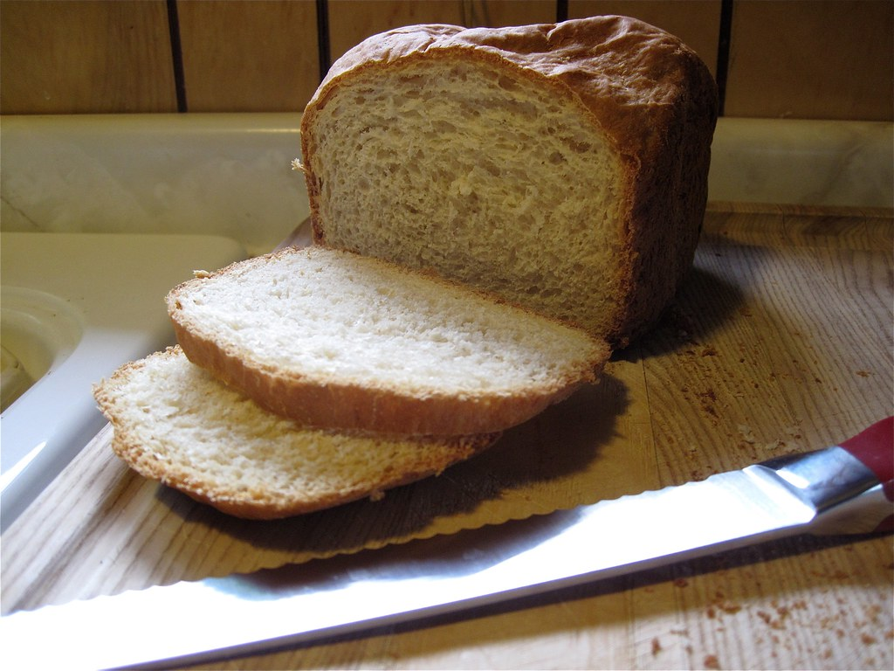

Sandwich Bread

Ingredients
- 6 1/2 to 7 1/2 cups unbleached all-purpose flour, divided
- 2 1/2 teaspoons salt
- 1 1/2 tablespoons instant yeast
- 1/4 cup sugar
- 2 3/4 cups very warm water
- 1/4 cup neutral-flavored oil (like grapeseed, canola, vegetable, avocado)
- Butter for top of loaves, optional
Instructions
- In the bowl of an electric stand mixer fitted with the dough hook (or in a large bowl, if making the dough by hand), combine THREE cups of the flour, salt, yeast and sugar.
- Add the water and oil and mix until combined. The mixture will be thinner than bread dough.
- Cover the bowl and let the batter rest for 10 minutes; it will be slightly bubbly at the end.
- With the mixer running (or stirring by hand), gradually add another 3 to 4 cups of flour, until the dough comes together in a cohesive ball that clears the bottom and sides of the bowl and doesn’t leave a lot of doughy residue on your fingers when touched while still being just slightly tacky (not over-floured and dense).
- Knead until the dough is smooth and supple.
- Lightly grease a large bowl. Transfer the dough to the prepared bowl, cover with greased plastic wrap or a light kitchen towel, and let rise until doubled, about an hour or so, depending on the warmth of your kitchen.
- Lightly punch down the dough and divide it into four equal pieces for roughly 1lb loaves.
- Grease two 8 1/2-inch by 4 1/2-inch bread pans.
- Press each piece of dough into a thick rectangle about 8-inches long; roll it up, pressing on the seams, and pinching the final seam together.
- Place the dough loaves into the prepared pans.
- Cover with lightly greased plastic wrap or thin kitchen towels and let rise until doubled and the dough has risen about 1-inch above the top rim of the pan, about an hour or so, depending on the warmth of your kitchen.
- While the dough rises, preheat the oven to 350 degrees F.
- Bake the bread for 30-32 minutes until golden and baked through. If using a thermometer, the bread should be between 190 - 200 degrees F.
- Remove from the oven and turn the bread out onto a wire rack or anything to keep it from overcooking on the pan. Immediately brush the tops of the loaves with melted butter if wanted (or use a stick of butter, peeling the paper back and rubbing it on the top of the hot bread).
- Let the bread cool completely.
- The bread can be stored at room temperature, covered in a bread bag, for a couple days, or frozen for up to a month or so.